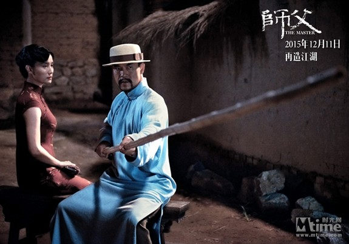
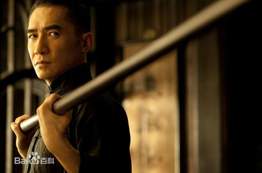
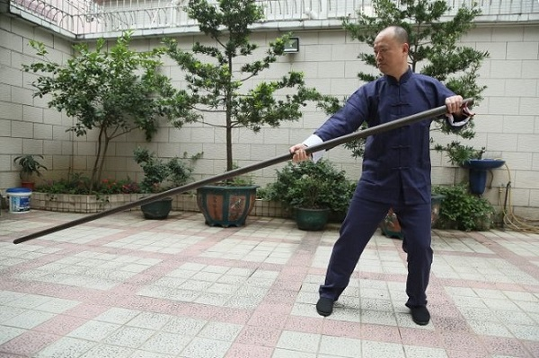
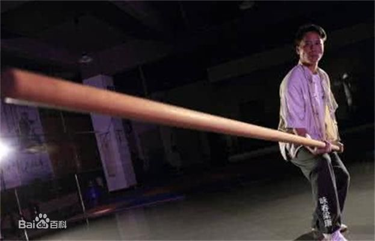

三. 六点半棍
电影中廖凡与宋佳在街边长凳对谈之间，用一根长竹竿击败来犯的小流氓，其使用的棍法叫做六点半棍，咏春拳必修兵器之一。

据传六点半棍源自少林，火烧少林寺之后至善禅师逃难遇到梁二娣（咏春高手，梁赞的师傅），见后者因工作每日都竹杆不离手臂力雄厚，为有缘人，随即将六点半棍法传授给他，后者将其引入咏春拳。“六点半”是南方俚语，意思是“吊儿郎当，无精打采”，因此六点半棍就是“提不起来”的棍法。棍长超过2米，架势为棍头点地。在香港功夫片中，六点半棍很是常见，比如《醉拳2》。


